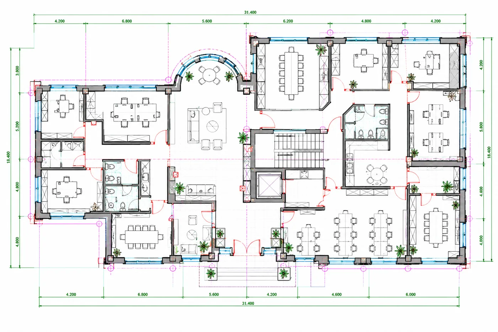

2D-CAD-Digitalisierung
Exakte Digitalisierung großformatiger technischer Zeichnungen und Bestandspläne, von A4 bis zu einem Vielfachen von A0. Wir scannen Originalzeichnungen bei Bedarf und vektorisieren sie anschließend zu CAD mit Maßen, Text, Symbolen und Layerstruktur, gemäß Ihrer CAD-Richtlinie.
- AutoCAD DWG / DXF, MicroStation DGN, Allplan
- Nachbearbeitet und qualitätsgeprüft durch CAD-Zeichner
- Bereits gescannt? Wir digitalisieren Ihre Bilddateien direkt
ab €49 zzgl. MwSt.
2D-CAD entdecken